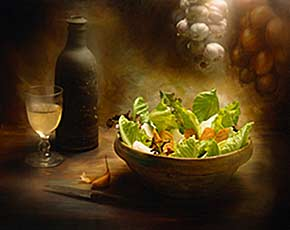

Ракия Фест 2014
Национална конференция на производителите на домашна ракия

от 23 до 26 октомври 2014г. зала 6 на НДК става домакин на втория Балкански фестивал на ракията и високоалкохолните напитки
Цената на входа е половин прасе или 10 литра ракия 50+ градуса.
Препоръчително е да турите Adidasa от сватбата
Препоръчително е да турите Adidasa от сватбата